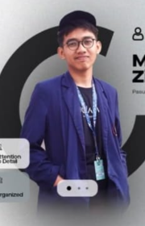

TERRA ARCHIVES • DEEP SPACE LOG
Civilization Repository
Architectural blueprints, spatial computing engines, and deployed software artifacts forged on planet Earth (Sol-III).
♁ SOL-III VERIFIED
A graphic designer & creative developer hailing from Indonesia with extensive experience in the field. My talents encompass crafting editorial designs, interactive web 3D journeys, creative visuals for live streaming and social media, expertly editing visual content, and analyzing social media insights.

Architectural blueprints, spatial computing engines, and deployed software artifacts forged on planet Earth (Sol-III).
Autonomous continuous integration running via orbital runners. All codebases verified and active in production.

"We are the cosmos made conscious — writing equations in light, sculpting worlds in code, and extending human intellect into the stars."
 ● Active Production
● Active Production
Interactive WebGL 3D interplanetary journey with parallel planetary orbits, real-time axial spin, custom procedural surfaces, physics-derived celestial bodies, and dynamic astronaut dossier HUD overlays.
 ✦ WebGPU Compute
✦ WebGPU Compute
Infinite node-based generative artboard canvas executing local diffusion models via WebGPU compute shaders. Features real-time collaborative vectors, latent brush interpolation, and multi-resolution rendering pipelines.
 ▲ Telemetry Online
▲ Telemetry Online
Sub-50ms latency telemetry command dashboard monitoring multi-UAV autonomous fleets. Includes 3D topographical trajectory tracking, live battery health diagnostics, geofencing alarms, and autonomous return-to-home protocols.
 ◆ 120k Ticks/Sec
◆ 120k Ticks/Sec
Institutional-grade decentralized trading terminal engineered with off-thread Web Workers and shared array buffers to process 120,000 tick updates per second with microsecond order routing and slippage mitigation.
 ◉ Relativistic Engine
◉ Relativistic Engine
A mathematical relativistic simulation modeling gravitational time dilation and quantum decoherence around event horizons. Features interactive tourbillon mechanics and custom procedural clockwork sound synthesis.
Vol. I: Selected Engineering Chronicles
Interactive 3D Winding Highway • Orbit with mouse • Click milestones to navigate
Core architecture kickoff, deep telemetry sensor arrays, Jovian atmospheric probe deployment, and early cadet community onboarding.
Multi-planetary data relay framework, magnetosphere radiation shielding protocols, and high-frequency Jovian communication relays.
Planetary sensor fusion matrix, Great Red Spot turbulence machine learning models, and real-time autonomous trajectory correction.
Colony mesh network deployment, inter-station collaborative research labs, and open interplanetary developer APIs for the next century of explorers.
Full narrative and scope description...
Creative 3D Developer & Full-Stack Software Engineer
Vellore Institute of Technology (VIT) • Computer Science & Engineering
Vellore Institute of Technology (VIT)
Focus on Spatial Graphics, Algorithms & Cloud Distributed Computing.
Designed an ultra-performant interactive 3D solar system featuring procedural planet atmospheres, volumetric asteroid belts, orbital telemetry, and cursor-reactive 3D hero experiences.
High-throughput spatial telemetry visualization dashboards with zero-latency WebGL shaders, particle simulations, and dynamic data feeds.
Crafted kinematic 3D hardware models with hinge angle interpolation, illuminated chiclet keycap shaders, and smooth pop-out dimensional cards.
Ministry of Education & AICTE
Engineered high-throughput spatial telemetry IoT command center with real-time WebGL visual mapping.
Architected an end-to-end telemetry pipeline processing live sensor telemetry streams, visualized via hardware-accelerated Three.js orbital maps with zero dropouts.
Spatial Dynamics Systems
Built custom shader pipelines, kinematic hardware rigs, and high-performance spatial UI components.
Optimized WebGL rendering loops, cutting draw calls by 34% across high-density 3D geometry models. Crafted custom GLSL procedural materials and interactive perspective viewports.
Vellore Institute of Technology (VIT)
Directing 3D WebGL workshops, orchestrating campus hackathons, and mentoring 400+ students in creative engineering.
Spearheaded university technical chapters, authored hands-on curriculum on modern spatial web graphics, and managed cross-functional design and engineering teams.
Global Game Jam International
Won Best Visual Design for procedural cosmos simulations featuring real-time planetary volumetrics and shaders.
Developed procedural planetary atmosphere shaders, raymarched planetary dust rings, and synchronized spatial audio synthesized on Web Audio API.
NPTEL / IIT Faculty & AWS
Achieved top national percentile in scalable cloud architecture, distributed consensus, and microservices.
Mastered CAP theorem trade-offs, raft consensus, elastic container orchestration, low-latency API gateways, and distributed caching topologies.